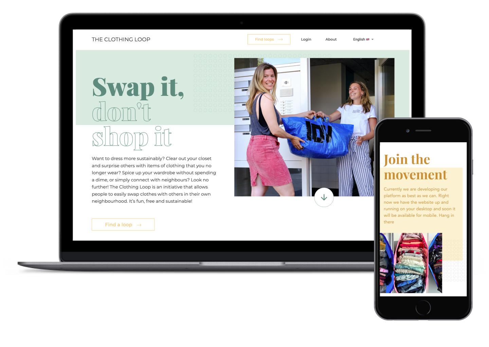
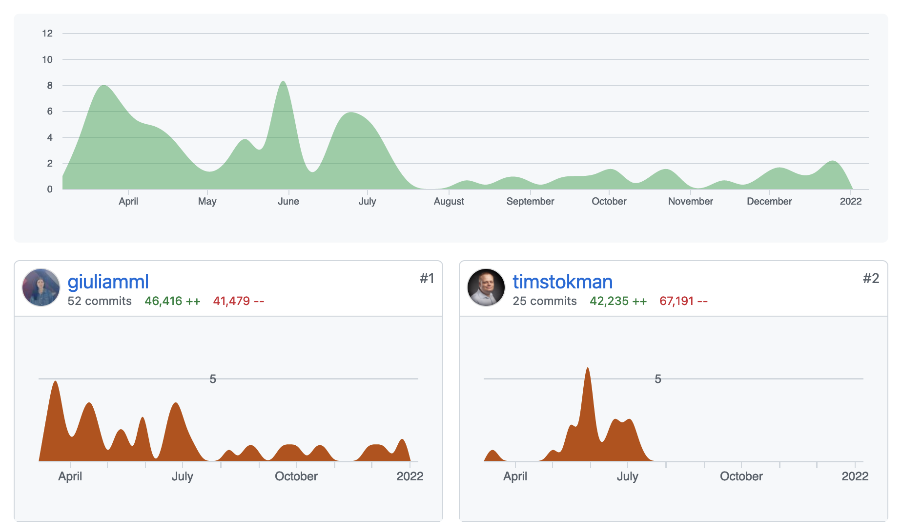
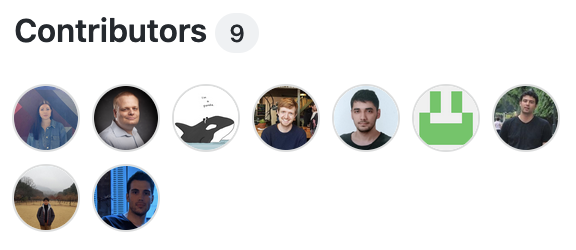
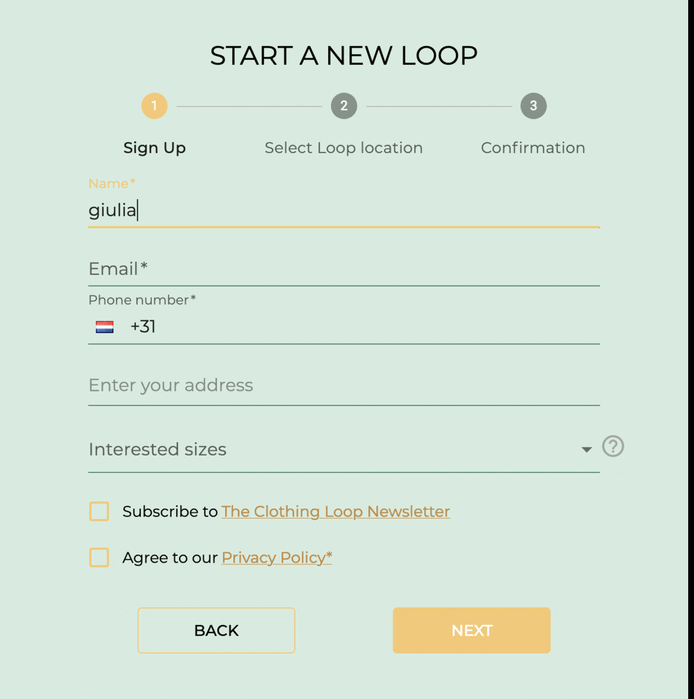
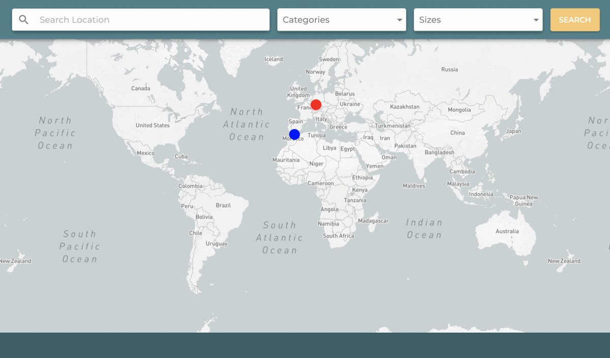
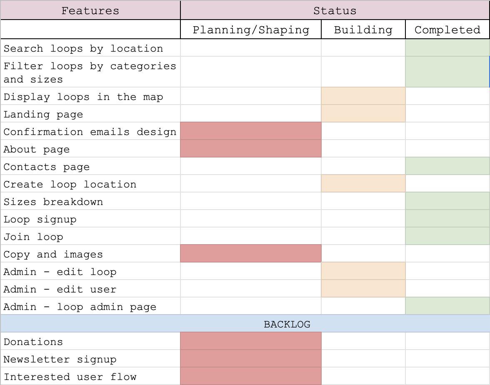

How I built and managed a fully customized digital solution for
the global expansion of a clothing swap initiative.

Project Overview
The Clothing Loop is a clothing swap system that lets you share
pre-loved clothes by connecting people in local communities that
share a bag of clothes.
The Clothing Loop won the What Design Can Do competition set up
by Impact Hub.
The initiative started in The Netherlands in early 2020 as a local
alternative for clothing swap events during the lockdown.
The initiative tackles the growing problem of overconsumption. It
aims to change consumers habits and reduce waste, providing a fun
and sustainable alternative to fast fashion. Currently, there are
300 actively circulating bags and over 12,000 users.
Role
UI Designer, Front-End Developer & Team Coordinator
I joined the project in April 2020 as a volunteer Front-end
developer because I highly valued the initiative's goal and wanted to improve my
my coding skills within a professional environment. Initially, we were a team of 4
contributors. During that time, I mainly contributed with some
UI implementations.
In July 2020, as the project started to grow, I was hired as
technical consultant. Under this role, my
contribution extended to design and project management (read more about this here).

As a technical consultant, I am responsible for implementing
features, making design decisions, as well as team management and
building. During the first development phase, I put together a team
of 5 volunteer web developers whom I scouted via
socialcoder.co.uk.

Requirements
The web app was developed to easily automate the process of user onboarding (which was previously done
manually using a Google Form) and securely store and manage user data via a fully customized back
office.
From the above requirements, the main functionalities designed
include:
Automated user signup flow
Interactive data visualization through a map view
Data management through a corresponding back office
For the first iteration of the web application, despite having
designed the full application (see more about the design process
here and the full design here), the core components I
developed
are:
Front-end part of the signup form used for two flow: 1. for users to
join an existing entry (aka bag of clothes) and 2. to start a new
one. It includes components from the Material UI library, Mapbox
geolocation search. The form also has validation which has been
built using Formik and Yup libraries. The Front-end communicates
with Firebase via an end-point which has been built using using
custom-made Firebase functions.

On of core functionalities of the web app, and the first users
interact with, is the map visualization that lets the user find a
bag of clothes circulating around their preferred location. The
bags are displayed via an interactive Mapbox map UI, and users can
search for a specific location, filter entries by categories, and
sizes.

The landing page was designed by a professional designer as a
volunteer contribution to the project. My work on this component
extended to the coding implementation, which includes a combination
of CSS and JS animations.
View landing page
Project management
To manage the project's work flow and accordingly coordinate the
work load among the team members, I use a spreadsheet that breaks
down overall features that need to be implemented and their status:
planning/shaping for features that
are still in the design phase and not yet agreed one or outlined;
building for features that in the
process of being coded; completed for
features built and approved.

In order to maintain a constant work flow, I create Github issues for
each feature that requires implementation. Then, team members
self-assign issues based on their preference. I found this strategy
works quite well for this project's circumstances; it keeps the work
flowing, even when contributors work in different time
zones or have different availabilities, and keeps them motivated to manage their work
independently.
The majority of the communications across the team is asynchronous,
as the contributors are based in several countries in Europe and
Asia. However, we check in on a weekly basis via video call and
discuss implementations on Slack.
Technologies
The decision-making process for the technology used to develop the
web application was done by the initiator of the the project and a
senior developer who was part of the team. The tech stack
includes:
Frontend
It is built using React and
Typescript. We are using several libraries
including Mapbox - for the map
visualization; Material UI - for
UI components; i18Next - for
internationalization; Helmet - to
generate meta tags; Formik - for
forms validation
Backend
It is built using Firebase - Firestore Databse,
which is fully customized using Firebase Functions